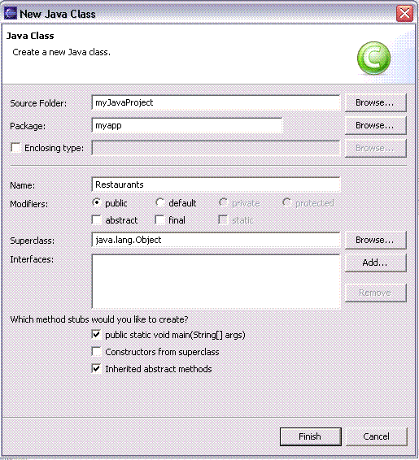
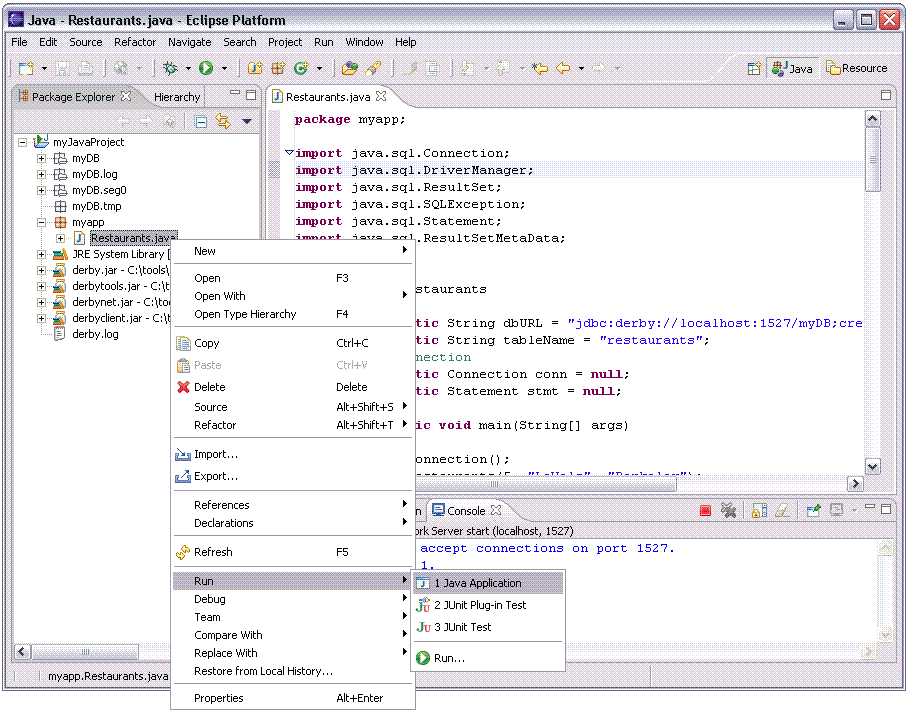
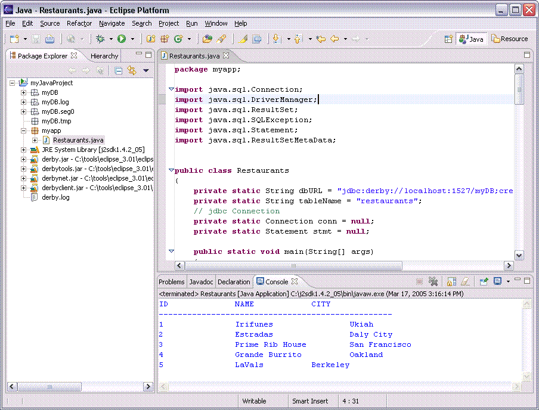

Once you've become familiar with starting the network server and running SQL queries, you'll want to use Derby from within a Java application. This section will demonstrate using Derby from a stand-alone Java application.
This example will access the data in our sample database, myDB, which contains the restaurants table. By following the two ij sections in the help, this database and table will have already been created and ready to use. If you have not created the database and the table return to the ij sections and create them now.

Give the Java class a package name, myapp, name the class Restaurants, make it a public class, and include a main method in the class since this will be a stand-alone application. The image below shows an example of this. Click Finish to create the class.
The Java class shown below, Restaurants.java, connects to the Derby Network Server, inserts a row into the restaurants table, and then displays a select from the restaurants table. Copy the code below into the Java editor window for the Restaurants.java class you just created.
package myapp;
import java.sql.Connection;
import java.sql.DriverManager;
import java.sql.ResultSet;
import java.sql.SQLException;
import java.sql.Statement;
import java.sql.ResultSetMetaData;
public class Restaurants
{
private static String dbURL = "jdbc:derby://localhost:1527/myDB;create=true;user=me;password=mine";
private static String tableName = "restaurants";
// jdbc Connection
private static Connection conn = null;
private static Statement stmt = null;
public static void main(String[] args)
{
createConnection();
insertRestaurants(5, "LaVals", "Berkeley");
selectRestaurants();
shutdown();
}
private static void createConnection()
{
try
{
Class.forName("org.apache.derby.jdbc.ClientDriver").newInstance();
//Get a connection
conn = DriverManager.getConnection(dbURL);
}
catch (Exception except)
{
except.printStackTrace();
}
}
private static void insertRestaurants(int id, String restName, String cityName)
{
try
{
stmt = conn.createStatement();
stmt.execute("insert into " + tableName + " values (" +
id + ",'" + restName + "','" + cityName +"')");
stmt.close();
}
catch (SQLException sqlExcept)
{
sqlExcept.printStackTrace();
}
}
private static void selectRestaurants()
{
try
{
stmt = conn.createStatement();
ResultSet results = stmt.executeQuery("select * from " + tableName);
ResultSetMetaData rsmd = results.getMetaData();
int numberCols = rsmd.getColumnCount();
for (int i=1; i<=numberCols; i++)
{
//print Column Names
System.out.print(rsmd.getColumnLabel(i)+"\t\t");
}
System.out.println("\n-------------------------------------------------");
while(results.next())
{
int id = results.getInt(1);
String restName = results.getString(2);
String cityName = results.getString(3);
System.out.println(id + "\t\t" + restName + "\t\t" + cityName);
}
results.close();
stmt.close();
}
catch (SQLException sqlExcept)
{
sqlExcept.printStackTrace();
}
}
private static void shutdown()
{
try
{
if (stmt != null)
{
stmt.close();
}
if (conn != null)
{
DriverManager.getConnection(dbURL + ";shutdown=true");
conn.close();
}
}
catch (SQLException sqlExcept)
{
}
}
}
Once Restaurants.java is compiled without errors, run the Java application by right-clicking it from the Package Explorer view and selecting Run As, Java Application.
The output from running Restaurants.java is shown below. It shows the successful insert of a row into our restaurants table and a select of all rows in the table. If you encounter any errors when running the application make sure the Derby Network Server has been started on port 1527 and the myDB database exists in the current workspace and Java project.
Restaurants.java accessed the Derby database, myDB using the Derby Network Client Driver. The values for loading the driver and the Database connection URL are shown below.
To change the application to use the Derby Embedded Driver we need to change these values to:
If a database is created in Derby using the embedded driver and no user name is specified, the default schema used becomes APP. Therefore any tables created in the database have a schema name of APP. However, when creating a Derby database using the Network Server, the value for the schema becomes the value of the username used to connect with as part of the database URL. In our example we first created the myDB database using the user me.
When we change the application to connect using the embedded driver, the schema will default to APP unless we explicitly specify a schema, or pass the username as part of the Database connection URL. To access the table without passing the username as part of the embedded driver Database URL we would refer to the table as ME.restaurants.
Only two lines of code need to be changed in Restaurants.java to use the Derby Embedded Driver to access the myDB database and insert and select into the me.restaurants table. The old values are listed below.
// variables
private static String dbURL = "jdbc:derby://localhost:1527/myDB;create=true;user=me;password=mine";
// from the createConnection method
Class.forName("org.apache.derby.jdbc.ClientDriver").newInstance();
The new values are shown below to use the Embedded Driver.
// variables
private static String dbURL = "jdbc:derby:myDB;create=true;user=me;password=mine";
// from the createConnection method
Class.forName("org.apache.derby.jdbc.EmbeddedDriver");
Comment out the old values and replace them with the new ones shown above. Recompile the class and if your Derby Network Server is running stop it before running the Java application with the Embedded Driver.
Applications which use the Derby Embedded Driver may only access the database from the same JVM. Applications which use the Derby Network Server can access the database from other JVM's.